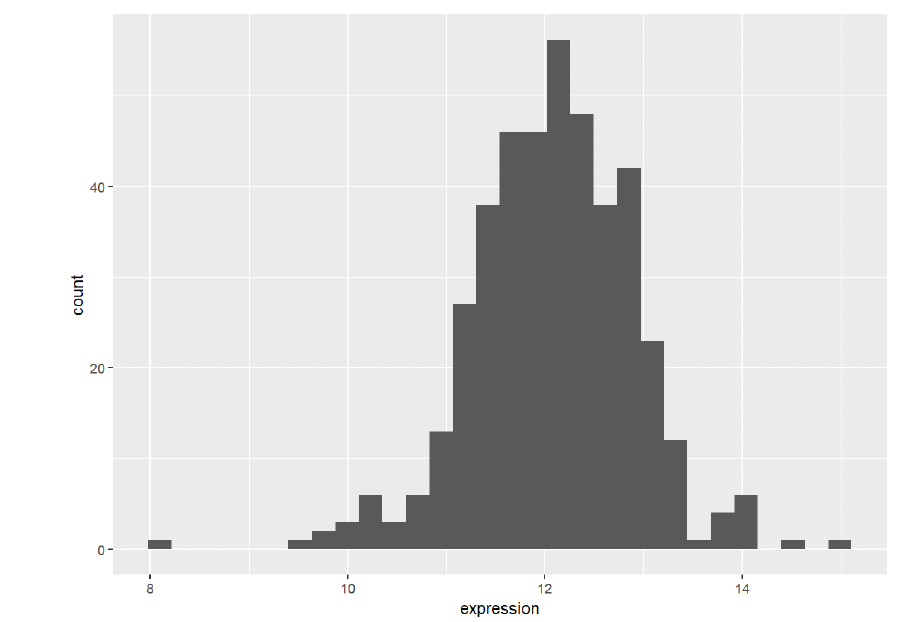
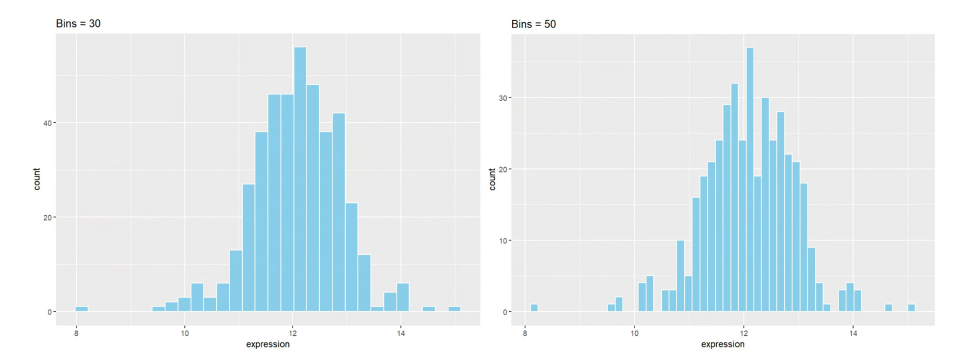

Histogram
A histogram uses rectangular bars to represent the frequency of data within specific intervals, where the total area of the bars corresponds to the total frequency. It is primarily used to visualize the distribution of continuous variables.
Example

This basic histogram illustrates the expression levels of the TSPAN6 gene across different samples. The x-axis represents the data values, with each bar covering a specific range of values, while the y-axis shows how many data points fall within that range. In this histogram, the bars indicate the count of values within each specified range.
The histogram reveals that the data is centered around a value of 12, with values spanning roughly from 8 to 16. The shape of the histogram is approximately bell-shaped, suggesting that the data may follow a normal distribution.
Setup
System Requirements: Cross-platform (Linux/MacOS/Windows)
Programming Language: R
Dependencies: ggplot2, ggExtra
# Installing necessary packages
if (!requireNamespace("ggplot2", quietly = TRUE)) {
install.packages("ggplot2") # Install ggplot2 for data visualization
}
if (!requireNamespace("ggExtra", quietly = TRUE)) {
install.packages("ggExtra") # Install ggExtra for enhancing ggplot2 graphics
}
if (!requireNamespace("tidyverse", quietly = TRUE)) {
install.packages("tidyverse") # Install tidyverse for data manipulation
}
# Loading the libraries
library(ggplot2) # Load ggplot2 for creating plots
library(ggExtra) # Load ggExtra for additional plot functionalities
library(tidyverse) # Load tidyverse for data manipulation functionsData Preparation
Here’s a brief tutorial using the built-in R datasets (iris, mtcars) and the TCGALIHC.htseq_counts.tsv dataset from UCSC Xena. This example demonstrates how to load and work with these datasets in R.
# Read the TSV data
data <- read.csv("TCGA-LIHC.htseq_counts.tsv", header = TRUE, sep = "\t") # Correct separator for TSV
# Filter and reshape data
data1 <- data %>%
filter(Ensembl_ID == "ENSG00000000003.13") %>%
pivot_longer(
cols = -Ensembl_ID,
names_to = "sample",
values_to = "expression"
) %>%
mutate(var = "var1") # Add a column to differentiate the variables
# Filter and reshape data for the second gene (Ensembl ID: ENSG00000000457.12)
data2 <- data %>%
filter(Ensembl_ID == "ENSG00000000457.12") %>%
pivot_longer(
cols = -Ensembl_ID,
names_to = "sample",
values_to = "expression"
) %>%
mutate(var = "var2") # Add a column to differentiate the variables
# Combine the two datasets
data12 <- bind_rows(data1, data2)
# View the final combined dataset
head(data12)Visualization
Basic Histogram
# Basic Histogram
p1 <- ggplot(data1, aes(x = expression)) +
geom_histogram()
p1
Key Parameters: binwidth / bins
The binwidth or bins parameter determines how much data each bin will contain. Modifying these values can significantly affect the appearance of the histogram and the information conveyed.
p2 <- ggplot(data1, aes(x = expression)) +
geom_histogram(bins = 50, fill = "skyblue", color = "white") +
ggtitle("Bins = 50")
p2
Histogram with Density Curve
The density curve provides a smooth representation of the data distribution. Unlike the histogram, which depends on the number of bins, the density curve uses kernel density estimation (KDE) to smooth the distribution. This allows a clearer understanding of the overall trend and shape of the data.
p1 <- ggplot(data1, aes(x = expression)) +
geom_histogram(aes(y = after_stat(density)), bins = 30, fill = "skyblue", color = "white") +
geom_density(alpha = 0.2, fill = "#FF6666")
p1
UNDER CONSTRUCTION
Reference
- Costa, A. M., Machado, J. T., & Quelhas, M. D. (2011). Histogram-based DNA analysis for the visualization of chromosome, genome, and species information. Bioinformatics, 27(9), 1207–1214. https://doi.org/10.1093/bioinformatics/btr131
- Xiang, L., Yang, H., Qin, Y., Wen, Y., Liu, X., & Zeng, W.-B. (2023). Differential value of diffusion kurtosis imaging and intravoxel incoherent motion in benign and malignant solitary pulmonary lesions. Frontiers in Oncology, 12, Article 1075072. https://doi.org/10.3389/fonc.2022.1075072
- Gihr, G. A., Horvath-Rizea, D., Hekeler, E., Ganslandt, O., Henkes, H., Hoffmann, K.-T., Scherlach, C., & Schob, S. (2020). Histogram analysis of diffusion weighted imaging in low-grade gliomas: in vivo characterization of tumor architecture and corresponding neuropathology. Frontiers in Oncology, 10, 206. https://doi.org/10.3389/fonc.2020.00206
- Wickham, H. (2016). ggplot2: Elegant graphics for data analysis. Springer. https://ggplot2.tidyverse.org
- Gao, Y. (2021). ggExtra: Add marginal plots to ggplot2. https://cran.r-project.org/package=ggExtra
- Aubry, R., & Bouchard, C. (2020). ggpmisc: Miscellaneous extensions to ‘ggplot2’. https://cran.r-project.org/package=ggpmisc
- Kassambara, A. (2021). ggpubr: ‘ggplot2’ based publication-ready plots. https://cran.r-project.org/package=ggpubr
- Wickham, H., & RStudio Team. (2019). tidyverse: Easily install and load the ‘tidyverse’. https://cran.r-project.org/package=tidyverse
- García, M. (2018). viridis: Default color maps from ‘matplotlib’. https://cran.r-project.org/package=viridis
Contributors
- Editor: YuJie Peng
- Reviewers: ShiXiang Wang, Peng Luo, Hong Yang, KeXin Li, Ying Shi